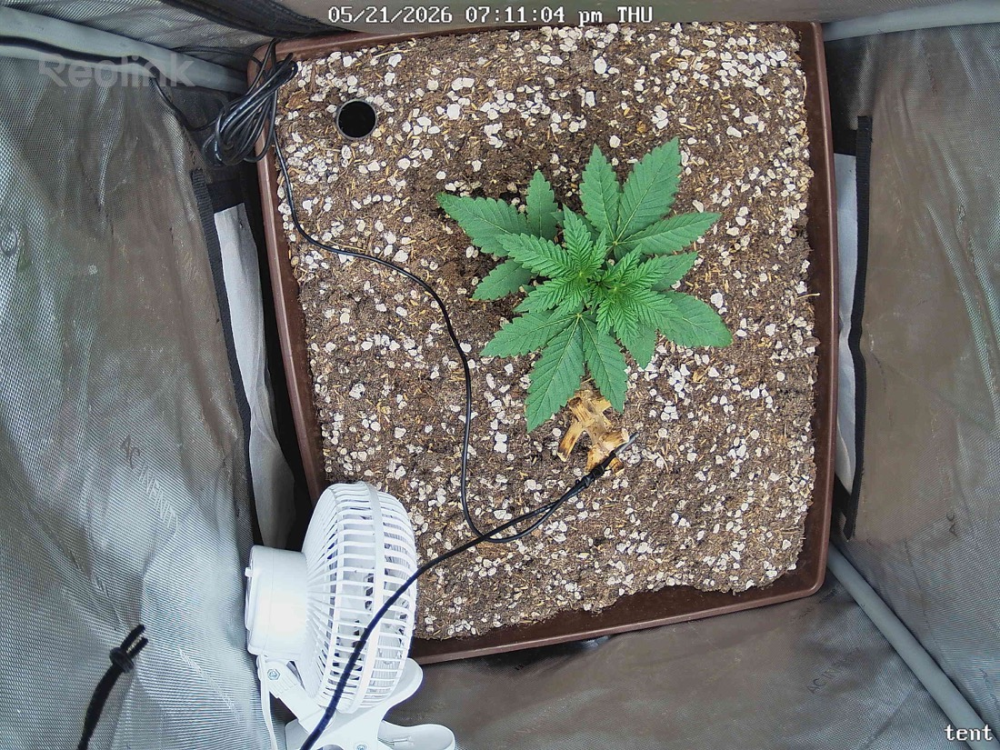

← All reports
May 21, 2026
Thu May 21, 2026 — 7:11 PM

Prognosis
- What changed: Effectively nothing — snapshots are ~2 minutes apart, same posture, same canopy footprint, same leaf orientation. This is a test pair.
- Color/structure: Uniform deep green across all fans, flat leaf surfaces, no praying or cupping. Stem still short and stocky, good node spacing for ~3 weeks since germ.
- Stress signs: None on the live tissue — no tacoing, bleaching, tip burn, or interveinal chlorosis. The brown/crispy material near the base is old organic matter (consistent with your no-till stump), not damage to the current plant.
- Soil surface: Perlite-heavy top still looks dry-ish on the surface — expected given last water was 5/19 and you're on a 4–5 day cycle. Next watering window is roughly 5/23–5/24.
- Phase check: Germinated 4/28, so ~23 days in. You should be seeing 4–5 true node pairs with lateral leaflet count climbing toward 7 — that's exactly what's in frame. Right on pace for late-veg ramp.
- Light: Plant is reading 400 PPFD cleanly (flat, dark green, no stretch toward source). No reason to back off; you have headroom to continue ramping if leaves stay flat over the next few days.
- Suggested next actions: No action needed. Hold 400 PPFD, water on schedule (~5/23), and reassess for a PPFD bump to ~450 once you have a non-test snapshot showing continued flat posture.
Overall: Healthy, on-track late-veg plant — no issues, just a duplicate-frame test.